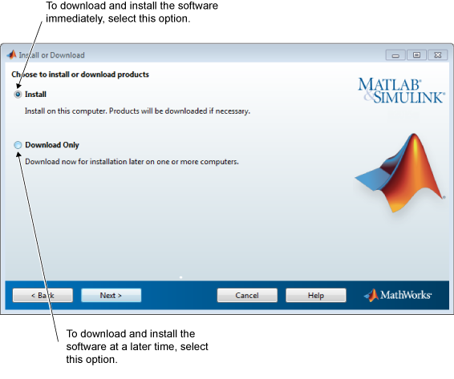

MATLAB® 製品を直ちにインストールするか、後で MATLAB 製品をインストールするためにソフトウェアをダウンロードするかを選択します。
ソフトウェアを直ちにインストールする場合は、[インストール] を選択します。
このオプションを選択すると、MATLAB 製品を MathWorks® からダウンロードして、現在ログインしているコンピューターにソフトウェアをインストールできます。
まずソフトウェアのダウンロードのみ行い、後で MATLAB 製品をインストールする場合は、[ダウンロードのみ] を選択します。
このオプションを選択すると、MathWorks からソフトウェアをダウンロードして指定したダウンロード フォルダーに置いておき、都合の良いときにインストールできます。1 つまたは複数のプラットフォームで 1 台または複数のコンピューターに製品をインストールできます。
